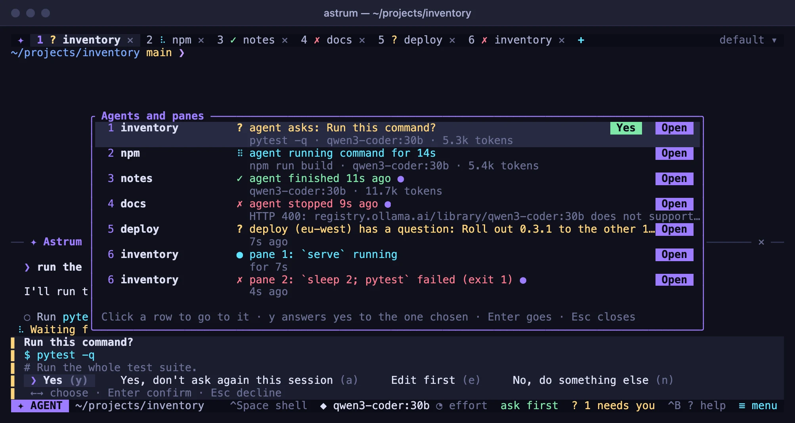
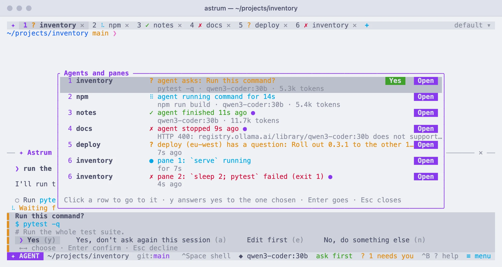

Several agents, and what needs you
Each tab has an agent of its own, and any pane can say it needs you. See what every one is doing, answer one from wherever you are, and be told when one needs you.
An agent in every tab
Each tab has an agent of its own, with its own conversation, and they work at the same time: one can run the tests in one tab while you ask another about something else. Ask, go to another tab, and carry on. You need not keep checking on them: the tab bar and the status bar say how each is doing, one list shows them all, and your terminal is told when one needs you.
The same goes for everything else in your tabs. A long build that ends, a program that rings the bell or asks for a notification, and a coding agent run as a program that says it is waiting for your permission: each is marked and told the same way (see When a pane needs you).
Within its tab, an agent works in the pane the keyboard was in when you asked, and stays there until it has finished (see The agent).
The tab bar
A mark before a tab's name says how its agent, and its panes, are doing:
| Mark | What it means |
|---|---|
| a spinner | The tab's agent is at work. |
? | The agent is asking you something, or a pane needs you. |
✓ | The agent, or a long command, finished while you were in another tab. |
✗ | The agent, or a long command, stopped with an error while you were in another tab. |
✓ and ✗ stay until you look at the tab. Other news is marked with ●: a command that finished, in a tab you have not looked at since; a ● in another color says that a command is still running there.
The status bar
When something in other tabs needs you, the status bar says how many: ? 2 need you, counting agents that are asking and panes that need you. Otherwise, when agents in other tabs are at work, it says so: a spinner and 2 agents working. Click it to see them all.
Agents and panes at a glance
One list shows every tab's agent, and whatever the panes are saying. To open it:
- click the count on the status bar (
? 2 need you,2 agents working); - choose
≡ menu→ Agents and panes at a glance; - press Ctrl+B A (a capital A);
- type
/agentsin the agent panel.


Each tab has a row for its agent: its number and name, what its agent is doing, and on a second line what it is on, its model and the tokens its conversation has used. Under it, a row for each thing its panes are saying (below). A tab with no conversation whose panes have something to say has only their rows. A ● marks news you have not seen.
| The row says | What it means |
|---|---|
asks: Run this command? | It is waiting for your answer. The second line has the command, or the start of what it would change. |
Running command for 1m 20s | It is at work, and has been for that long. The second line has the command or the tool it is on. |
following a command it started | A command it started is still running after the agent stopped waiting for it. |
finished 3m 2s ago | It is done. |
stopped 40s ago | It ended with an error, which the second line gives. |
stopped by you 5s ago | You stopped it. |
ready | There is a conversation, and nothing is going on. |
no conversation | Nothing has been asked in that tab yet. |
Click a row, or its Open button, to go to it: for an agent, the tab comes to the front with the agent panel open and the keyboard in it; for a pane, the tab comes to the front with the keyboard in that pane. With the keyboard, Up and Down choose a row, Enter goes to it, and Esc closes the list. When the list opens, the row already chosen is the first that needs you, else the first with news, else the agent of the tab in front.
Answering from the list
The row of an agent that asks to run a command has a Yes button when the list can show you the whole command: one line, short enough to fit, with no warning attached. Click it, or choose the row and press y, to answer yes without leaving where you are. It is the same as Yes on the question itself: the command runs.
Everything else is answered in its tab: a command of several lines or too long to show, one that comes with a warning, a change to a file, an MCP tool, and any answer but yes (editing the command first, or declining). For those the row has only Open. A question that has only just appeared takes no yes from the list for a moment, so a click meant for the one before it is not taken as an answer.
When a pane needs you
Any pane can say it needs you, is at work, is done or has failed. Astrum hears it from:
- A long command. With the shell integration (zsh, bash and fish have it), a command that runs at least
done_after_secsseconds (10 unless you set it;0turns this off) in a pane you cannot see is marked at work while it runs, and when it ends, done, or failed with its exit code. - The bell. A program that rings it, in a pane you cannot see, needs you.
- A notification a program asks for, of any of the three kinds below (OSC 9, OSC 777 and kitty's OSC 99): it needs you, and the row says what the notification said.
- The program-status sequence, which coding agents run as programs, build tools and plain scripts can send to say how they are doing:
ESC ] 7501 ; state=…:… ESC \, withstateone ofidle,working,done,blocked(needs you;kindsays whether forpermission, aquestionorauth),errororclear, and optionallyprogress(0 to 100),msgandtitle(each base64),app(the program's name) andid(one of several tasks in the pane, such asdeploy/eu-west). A program can ask what is understood withESC ] 7501 ; ? ESC \, and is answered.
A script can say it, for example:
printf '\e]7501;state=blocked:kind=question:app=deploy:msg=%s\e\\' "$(printf 'Go ahead?' | base64)"Its rows in the list say what was said:
| The row says | What it means |
|---|---|
make test failed (exit 2) | A long command failed while you could not see it. |
npm run build finished | A long command ended well. |
npm run dev running | A command has been running a while; the second line says for how long. |
Rang the bell | A program rang the bell. |
Tests: all passed | A program's notification: its title and text. |
deploy needs you: Go ahead? | A program says it is waiting for you, and why. |
deploy (eu-west) is at work, 40% | One task of a program, and how far it has got. |
What is not marked:
- The pane in front of you. You can see it. (A program that says it is at work or waiting for you is still marked, so that the tab says so when you look away.)
- A full-screen program (an editor,
less) is never marked at work, and neither is a line you are typing. - A command the agent runs: the agent says for itself how it went.
Looking at the pane clears what it said. A program that says it is waiting for you stays marked until it says otherwise, or until it ends and the shell is back at its prompt. To hear nothing more from a pane, right-click it → Don't tell me about this pane; the same menu then offers to tell you again.
Panes on other machines work the same way: what their programs print reaches this machine. What a program says is only ever shown: control characters and characters that reorder text are taken out, and its length is capped, before it is drawn or sent to your terminal.
Being told
When an agent in a tab you are not looking at asks something, finishes, or stops with an error, or a pane you cannot see needs you, finishes or fails, your terminal is told: with a notification such as "Astrum: The agent in tab 2 (tests) is asking you something", or "Astrum: Tab 3 (api): make test failed (exit 2)", where the terminal is known to show one, and with the bell otherwise:
| Terminal | How it is told |
|---|---|
| iTerm2, WezTerm, Ghostty | A notification, sent as OSC 9. |
| kitty | A notification, sent as OSC 99. |
| foot | A notification, sent as OSC 777. |
any other, or astrum run inside a terminal multiplexer | The bell. |
Astrum recognizes the terminal from the environment astrum is started in (TERM_PROGRAM, TERM and the like). Where that does not say, as can happen over SSH, or to choose another way, set ASTRUM_NOTIFY before starting astrum:
ASTRUM_NOTIFY=osc777 astrumosc9, osc99 and osc777 choose that kind of notification, and none the bell alone.
Each terminal window attached to the session is told on its own, in its own way, and a window that has that tab in front is not told at all. A pane that says the same thing again is not told of twice, and no pane is told of more than once in two seconds. Whether a notification then appears on screen is up to the terminal and the system's notification settings.
What the agents share
- The model. One model is chosen for the session: choosing another in one tab changes it for every tab's agent from its next request. See Providers and models.
- The autonomy level is the session's too. A Yes, don't ask again this session given to one tab's agent applies to that tab alone. See How much it does on its own.
- MCP servers are the session's, and every tab's agent uses the same ones. See MCP servers.
- Rules and skills come from the files of each tab's own directory, with your own beside them. See Rules and skills.
- Conversations are each tab's own, and are saved one by one.
/conversationslists them all, with the tab each one is open in; a conversation can be open in one tab at a time. See Conversations.